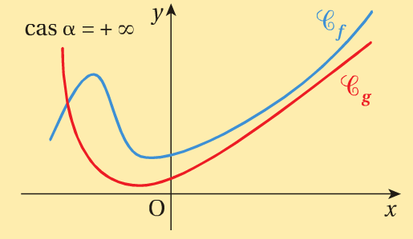
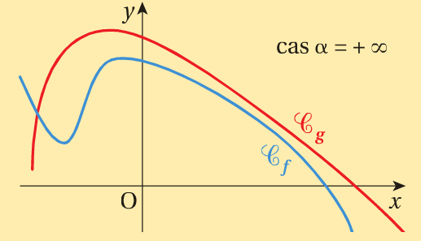

\(\forall n\in\mathbb{N}^{*} \lim\limits_{x \to +\infty} x^{n}=+\infty \text{ , } \lim\limits_{x \to +\infty} \dfrac{1}{x^{n}}=0^{+} \)
\( \forall n\in\mathbb{N}^{*} \lim\limits_{x \to -\infty} x^{n} = \begin{cases} +\infty \text{ si \(n\) est pair}\\ -\infty \text{ si \(n\) est pair} \end{cases} \text{ , } \lim\limits_{x \to -\infty} \dfrac{1}{x^{n}}= \begin{cases} 0^{+} \text{ si \(n\) est pair}\\ 0^{-} \text{ si \(n\) est pair} \end{cases} \)
\(\lim\limits_{x \to +\infty} \sqrt{x}=+\infty \text{ , } \lim\limits_{x \to +\infty} \dfrac{1}{\sqrt{x}}=0^{+}\)
\(\lim\limits_{x \to a^{+}} \dfrac{1}{x-a}=+\infty \text{ , } \lim\limits_{x \to a^{-}} \dfrac{1}{x-a}=-\infty\)
Autre Notation\( ( x\rightarrow a^{+} ) \Leftrightarrow ( x\rightarrow a_{>} ) \text{ , } ( x\rightarrow a^{-} ) \Leftrightarrow ( x\rightarrow a_{<} )\)
\( \lim\limits_{x \to a^{+}} f(x)=+\infty \text{ se note aussi } \lim\limits_{x \to a_{>}} f(x)=+\infty \)
\( \lim\limits_{x \to a^{-}} f(x)=-\infty \text{ se note aussi } \lim\limits_{x \to a_{ <}} f(x)=-\infty \)
Soient \( f \) et \( g \) trois fonctions définies sur un intervalle \( I \) au voisianage \( \alpha \), \( \alpha \) étant un réel, \( +\infty \) ou \( -\infty \).
\( \text{ Si pour tout \( x\in I \): } \begin{cases} f(x)\geq g(x)\\ \lim\limits_{x \to \alpha}g(x)=+\infty \end{cases} \text{ alors } \lim\limits_{x \to \alpha}f(x)=+\infty \)

\( \text{Si pour tout \( x\in I \): } \begin{cases} f(x)\leq g(x)\\ \lim\limits_{x \to \alpha}g(x)=-\infty \end{cases} \text{ alors } \lim\limits_{x \to \alpha}f(x)=-\infty \)

\( \text{Soit \( f(x)=-x+\sin x \) Calculer }\lim\limits_{x \to +\infty} f(x) \)
\( \text{Pour tout \(x\), \( \sin x\leq 1 \implies -x + \sin x \leq 1 - x \implies f(x)\leq 1 - x \).} \)
\( \text{Posons \( g(x)=1-x \) donc \( f(x)\leq g(x) \).} \)
\( \text{Or,} \lim_{x \to +\infty}g(x)=-\infty, \text{donc} \lim\limits_{x \to +\infty}f(x)=-\infty \)
\( \text{Soit \( g(x)=\frac{\sqrt{1+x^{2}}}{x^{2}} \). Calculer }\lim\limits_{x \to 0} g(x) \)
\( \text{Posons \( f(x)=\frac{1}{x^{2}} \). Comme, pour tout \(x\neq 0\), on a, \( 1\leq \sqrt{1+x^{2}} \)., on a, pour tout }, x\neq 0 \)
\( f(x)\geq g(x) \text{ Or,} \lim_{x \to 0}g(x)=+\infty, \text{donc} \lim_{x \to 0}f(x)=+\infty \)
Soient \( f \), \( g \) et \( h \) trois fonctions définies sur un intervalle \( I \) au voisianage \( \alpha \), \( \alpha \) étant un réel, \( +\infty \) ou \( -\infty \).
\( \text{ Si \( \forall x\in I \) } \begin{cases} \quad g(x) \leq f(x)\leq h(x) \\ \lim\limits_{x \to \alpha}g(x)=\lim\limits_{x \to \alpha}h(x)=\ell, \end{cases} \text{ alors } \lim\limits_{x \to \alpha}f(x)=\ell \)
\( \text{ Calculer } \lim_{ x\to +\infty} \frac{x-\sin x}{x^{2}} \)
Soit \( \alpha \), \( \beta \) et \( \gamma \) des réels ou \( \pm\infty \) On considère deux fonctions \( u \) et \( v \) telles que \( \text{ Si } \begin{cases} \lim_{x \to \alpha}u(x)=\beta \\ \lim_{x \to \beta}v(x)=\gamma \end{cases} \text{ alors } \lim_{x \to \alpha}v(u(x))=\gamma \)
\( \text{Calculer }\lim\limits_{x \to +\infty}\sqrt{\frac{9}{x}+7} \)
On commence par la fonction la plus à l'intérieur :
\( \text{Posons } u(x)=\frac{9}{x}+7 \text{ et } v(x)=\sqrt{\frac{9}{x}+7} \)
\( \lim\limits_{x \to x_{0}}f(x)=\lim\limits_{t \to 0}f(x_{0}+t) \)
\( \lim\limits_{x \to +\infty}f(x)=\lim\limits_{X \to 0^{+}}f \left( \frac{1}{X} \right) \)
\( \lim\limits_{x \to -\infty}f(x)=\lim\limits_{X \to 0^{-}}f \left( \frac{1}{X} \right) \)
Preuve[Exercice]
\( \lim\limits_{x \to 0} \frac{\sin x}{x}=1 \)
\( \lim\limits_{x \to 0} \frac{\tan x}{x}=1 \)
\( \lim\limits_{x \to 0} \frac{1-\cos x}{x^{2}}=\frac{1}{2} \)
\( \lim\limits_{x \to 0} \frac{\cos x -1 }{x}=0 \)
\( \lim\limits_{x \to +\infty}x\sin \frac{1}{x} \)
\( \lim\limits_{x \to +\infty}x\tan \frac{3}{x} \)
\( \lim\limits_{x \to +\infty}x^{2}\left( 1 - \cos \frac{2}{x} \right) \)
Les limites peuvent être interprétées géométriquement de plusieurs manières en fonction du contexte.
Voici quelques exemples typiques :
\( \text{ Une fonction } f \text{ a une asymptote horizontale en } y = \ell \text{ lorsque} \lim\limits_{x \to +\infty} f(x) = \ell \text{ ou } \lim\limits_{x \to +\infty} f(x) = \ell \)
\( \text{ Si } \lim\limits_{x \to +\infty} f(x) = \ell \text{ on dit que: } y = \ell \text{ est } \text{ une AH } \text{ à } (C_{f}) \text{ en } -\infty \)
\( \text{ Si } \lim\limits_{x \to -\infty} f(x) = \ell \text{ on dit que: } y = \ell \text{ est } \text{ une AH } \text{ à } (C_{f}) \text{ en } -\infty \)
Cela signifie que la courbe de la fonction se rapproche de la droite \( y = \ell \) à mesure que \( x \to +\infty \) ou \( x \to -\infty \).
Déterminer l'AH de \( f \)
\( f(x) = \frac{2x^2}{x^2 + 1} \)
\( \lim\limits_{x \to +\infty} f(x) = 2, \quad \lim\limits_{x \to -\infty} f(x) = 2 \)
La courbe de la fonction se rapproche de la droite \( y = 2 \) à mesure que \( x \to +\infty \) ou \( x \to -\infty \).
Soit \( x = a \in \mathbb{R} \)
Si \( \lim\limits_{x \to a} f(x) = \pm\infty \) alors \(x = a\) est une AV à \(C_{f}\)
Cela signifie que la courbe de la fonction tend vers l'infini lorsque \( x \) approche \( a \) par la droite (ou la gauche).
Déterminer de l'AV de \( f \) tel que \( f(x) = \frac{1}{x} \)
\( \lim\limits_{x \to 0^{+}} f(x) = +\infty \quad \text{et} \quad \lim\limits_{x \to 0^{-}} f(x) = -\infty, \)
ce qui signifie que la fonction a une asymptote verticale en \( x = 0 \).
Si \( \lim\limits_{x \to +\infty} [f(x)-(ax+b)] = 0 \) alors \(y = ax+b\) est une AO à \((C_{f})\) en \( +\infty \)
Si \( \lim\limits_{x \to -\infty} [f(x)-(ax+b)] = 0 \) alors \(y = ax+b\) est une AO à \((C_{f})\) en \( -\infty \)
Cette méthode est utilisée pour montrer que \(y=ax+b\) est est une AO
Soit \( f(x) = \frac{x^2 + 2x + 1}{x} \) une fonction et \( (C_{f}) \) sa courbe représentative.
Montrer que \( y = x + 2 \) est AO à \( (C_{f}) \) en \( \pm\infty \)
\( y = x + 2 \) est AO à \( (C_{f}) \) en \( \pm\infty \) si \( \lim\limits_{x \to +\infty}\left[ f(x)-y\right] =0 \)
En effet \(f(x) = \frac{x^2 + 2x + 1}{x}, \quad \lim\limits_{x \to +\infty} \left( f(x) - (x + 2) \right) = 0.\) La courbe de la fonction se rapproche de la droite \( y = x + 2 \) pour \( x \to +\infty \).Soit \( f \) une fonction, \( a, b \) un réel et \( (C_{f}) \) sa courbe représentative .
\( \text{Si } \lim\limits_{x \to +\infty}f(x)=\pm\infty \text{ et } \lim\limits_{x \to +\infty}\frac{f(x)}{x}=a \text{ et } \lim\limits_{x \to +\infty}\left( f(x)-ax\right) =b \) \( \text{ alors } y = ax + b \text{ est une AO à } (C_{f})\quad en\quad +\infty.\)NB:
Cette propriété reste valable lorsque \( x\rightarrow -\infty\)
On aura \( y = ax + b \) est une AO à \( (C_{f}) \) en \(-\infty \)
Si \( \lim\limits_{x \to +\infty} f(x) = \pm\infty et \lim\limits_{x \to +\infty} \frac{f(x)}{x} = \pm\infty \)
alors \((C_{f})\) admet une branche parabolique de direction \( (oy) \) en \( +\infty \)
Cette propriété reste valable lorsque \(x \rightarrow -\infty\)
Si \( \lim\limits_{x \to +\infty} f(x) = \pm\infty \) et \( \lim\limits_{x \to +\infty} \frac{f(x)}{x} = 0 \)
alors \((C_{f})\) admet une branche parabolique de direction \( (ox) \) en \( +\infty \)
Si \( \lim\limits_{x \to +\infty} f(x) = \pm\infty \) et \( \lim\limits_{x \to +\infty} \frac{f(x)}{x} = a \) et \( \lim\limits_{x \to +\infty} (f(x)-ax) = \pm\infty \)
alors \((C_{f})\) admet une branche parabolique de direction \(y=ax\) en \( +\infty \)
Étudier les branches infinies des courbes représentatives des fonctions suivantes :
Soit f une fonction definie en \( x_{0} \) on dit que f est continue en \( x_{0} \) si \( \lim\limits_{x \to x_{0}} f(x)=f(x_{0}) \).
A Revoir
[Continuité à gauche et continuité à droite]
[Continuité à gauche et continuité à droite]
[Prolongement par continuité]
[Continuité sur un intervalle]
[Continuité de fonctions usuelles]
[Opérations sur les fonctions continues]
Si \( f \) est continue en \(x_{0}\) et \( g \) est continue en \( f(x_{0}) \) alors \( gof \) est continue en \(x_{0}\) donc la composition de deux fonctions continues est une fonction continue.
Domaine de définition
La fonction \( f(x) = \sqrt{|2x^5|} \) est définie pour tous les \( x \in \mathbb{R} \), car l'expression \( |2x^5| \) est toujours positive ou nulle, et la racine carrée d'un nombre positif ou nul est bien définie. Donc, \( f(x) \) est définie sur \( \mathbb{R} \).
Étude de la continuité
La fonction \( f(x) \) est composée des fonctions suivantes :Ainsi, \( f(x) \) est continue sur \( \mathbb{R} \), car c'est la composition de fonctions continues sur leur domaine respectif.
Conclusion : La fonction \( f(x) = \sqrt{|2x^5|} \) est continue sur \( \mathbb{R} \).
Domaine de définition
La fonction \( f(x) = x\sqrt{1 - x} \) impose que \( 1 - x \geq 0 \), c'est-à-dire \( x \leq 1 \).
Ainsi, la fonction est définie pour \( x < 1 \), sans autres contraintes. Le domaine de définition de \( f(x) \) est donc \( ]-\infty, 1[ \).
Étude de la continuité
Point de discontinuité possible en \( x = 1 \):
Lorsque \( x \) tend vers 1, la fonction \( \sqrt{1 - x} \) tend vers 0. À \( x = 1 \), la racine carrée devient \( \sqrt{1 - 1} = 0 \), donc \( f(1) = 1 \times 0 = 0 \). Cependant, la fonction n'est pas définie en \( x = 1 \), ce qui entraîne une discontinuité en \( x = 1 \).
Conclusion:
La fonction \( f(x) = x\sqrt{1 - x} \) est continue sur \( ]-\infty, 1[ \) et présente une discontinuité en \( x = 1 \).| \( K \) | \( f(K) \) | \( f(K) \) |
|---|---|---|
| \( f \) stictement croissante | \( f \) strictement décroissante | |
| [a;b] | \( [f(a);f(b)] \) | \( [f(b);f(a)] \) |
| [a;b[ | \( [f(a);\lim\limits_{x\to b^{-}}f(x)[ \) | \( [\lim\limits_{x\to b^{-}}f(x);f(a)[ \) |
| ]a;b[ | \( ]\lim\limits_{x\to b^{+}}f(x);\lim\limits_{x\to b^{-}}f(x)[ \) | \( ]\lim\limits_{x\to b^{-}}f(x);\lim\limits_{x\to b^{+}}f(x)[ \) |
| \( [a;+\infty[ \) | \( [f(a);\lim\limits_{x\to +\infty}f(x)[ \) | \( [\lim\limits_{x\to +\infty}f(x);f(a)[ \) |
| \( \mathbb{R} \) | \( ]\lim\limits_{x\to -\infty}f(x);\lim\limits_{x\to +\infty}f(x)[ \) | \( ]\lim\limits_{x\to +\infty}f(x);\lim\limits_{x\to -\infty}f(x)[ \) |
Soit \( f(x)=\frac{2x+1}{x-1} \)
Déterminer l'image par \( f \) des intervalles \( [-2;0] \) et \( ]1;+\infty[ \)
Méthode de dichotomie(Approche par exemple)
Méthode de balayage(Approche par exemple)[Exercice]